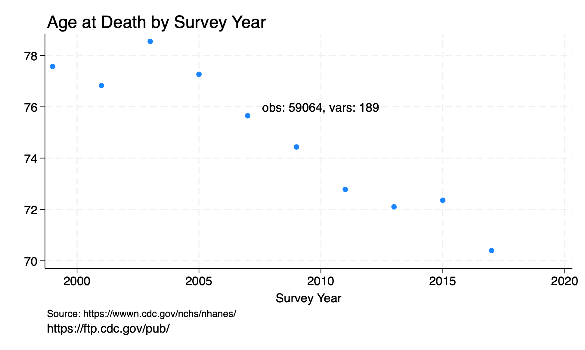
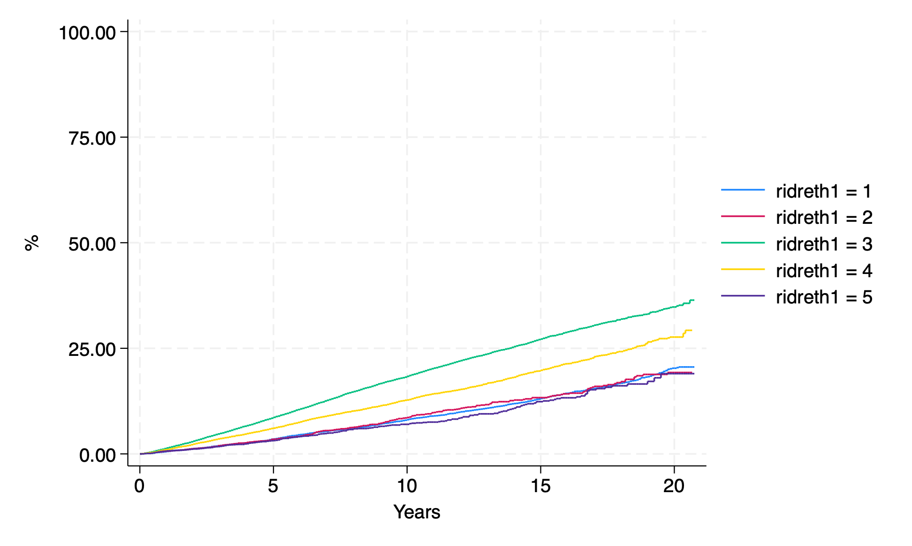

twoway#
This is a twoway plot:
Databases:
Workflow:
import .csv files -> save .dta files
logfile to capture salient bits of process
dofile that appends all the saved .dta files from step #1
logfile that documents the above process
twowayplot script that produces the above figure
Science:
Credo:
foreach command in noisily quietly { //this line can be replaced with program define
`command' { //and this line of code can be replaced with quietly
if 0 { //background
1. originally a task for the advanced stata class
2. take it on and you may earn up to 1.5 bonus points
3. we may discuss this in class if time allows
}
if 1 { //macros,logfile,settings
timer on 1
global url https://data.nber.org/mortality/
global filename mort1959.dta
global logfile wk1.ph.340.700-`command'
cls
capture log close
log using ${logfile}.log, replace
set more off
version 15
noi di "`c(current_time)' `c(current_date)'"
timer off 1
}
if 2 { //timer,loop,data
timer on 2
forvalues i=1959/1961 {
use "${url}`i'/mort`i'", clear
save y`i', replace
timer off 2
}
}
if 3 { //clear,append,save
timer on 3
clear
forvalues i=1959/1961 {
append using y`i'
}
timer off 3
}
if 4 {
timer on 4
noi di "# of deaths: `c(N)' & # of variables: `c(k)'"
noi lookfor year
g deaths=1
preserve
collapse (count) deaths, by(datayear)
save twoway.mort.dta,clear
noi di "# of deaths: `c(N)' & # of variables: `c(k)'"
noi list
#delimit ;
line deaths datayear,
sort
ti("United States")
xti("Year");
#delimit cr
restore
noi di "# of deaths: `c(N)' & # of variables: `c(k)'"
timer off 4
}
if 5 {
save mort.dta, replace
}
noi timer list
timer clear
log close
}
}
Which of these is not a twoway graph? Does the area under the curve represent anything meaningful?
Crudely, the AUC might be viewed as rectangular: height is 100 individuals x width is 100 years (i.e., ages) = 10,000
Does 10,000 correspond to any of the output? Perhaps to c(N)?

Here’s the script that produced them but you have to do some debugging before it works. There’s no free lunch today!
I’d like to invoke the metaphor of gene activation, which is analogous to if macro {, else if macro {, and else {. Although below we have Stata code-blocks rather than genetic code, the metaphor is apt. What happens upstream in one code-block may affect the expression of another downstream code-block for a given process, but in a dofile as compared to a given biological process.
{kind=link}
You ought to emerge from this class thinking of Stata programming as a series of if macro { conditional statements. And your teaching team will lookout for these in your .do files!
qui {
if c(N) { //clear data before running script
1. adopted from wk1 of this class
1. https://jhustata.github.io/book/bbb.html
2. import demographics data from nhanes
}
if c(N)<1 { //settings,logfile,macros
capture log close
log using session0.log, replace
global url https://wwwn.cdc.gov/Nchs/Nhanes/1999-2000/
global datafile DEMO.XPT
}
if c(N)<2 { //import datafile
import sasxport5 "${url}${datafile}", clear
replace ridageyr=.
noi di "N=`c(N)'"
}
if c(N)>3 {
g number=1
preserve
sum ridageyr
assert c(type) == "float"
collapse (sum) number,by(ridageyr)
}
local N=c(N)-1
if `N' { //no ouput if c(N)=0
noi di "N=`c(N)'"
local ages=c(N)
line number ridageyr, connect(stairstep) /*
*/text(500 40 "Vars: `c(k)', Obs: `c(N)'") /*
*/yti("") /*
*/xti("")
graph save agedist1.gph,replace
twoway area number ridageyr, connect(none) /*
*/text(500 40 "Vars: `c(k)', Obs: `c(N)'") /*
*/yti("") /*
*/xti("")
graph save agedist2.gph,replace
restore
}
if `N' {
noi di "N=`c(N)'"
hist ridageyr, freq bins(`ages') /*
*/text(500 40 "Vars: `c(k)', Obs: `c(N)'") /*
*/yti("") /*
*/xti("")
graph save agedist3.gph,replace
graph combine agedist1.gph /*
*/agedist2.gph /*
*/agedist3.gph /*
*/, row(1) /*
*/ l1ti("N",orientation(horizontal)) /*
*/ b1ti("Age, y")
graph export agedist.png,replace
noi di c(scheme)
noi di c(version)
}
else {
noi di "N=`N' (i.e., code-block is not expressed)"
}
}
Sampling large datasets
Approach to workflow
May cut hours off efforts
here’s an example
exploratory analyses on sample
build .do file on sample, iterate
submit final job to full dataset
Let’s recall an extra credit challenge from the first day of class:
See also
Bonus points: Use the tokenize command to append the DEMO.XPT files for all continuous NHANES: 1999-2018 into one file. Your .do file should include only one import sasxport5 statement. Search this book for the import sasxport5 command. Up to 1.5 bonus points
We now wish to link the dataset created above to mortality outcomes to perform survival analysis. See chapter 2: r(mean) and specifically the if 6 { code-block, which was exclusively dedicated to survival analysis and used the stset, sts graph, and stcox commands! How may we go about this using the online resources available to us?
nhanes_mortality
nhanes_continuous_demo
merge 1:1 seq using nhanes_mortality, keep(matched)
tab survey
lookfor age
lookfor follow
egen surveytag=tag(survey)
codebook surveytag
desc survey
split survey, parse("-")
destring survey1, replace
g years=permth_exm/12
lookfor mort
g age_at_death=ridageyr + years if mortstat==1
bys survey: egen av_age_at_death=mean(age_at_death)
#delimit ;
twoway scatter av_age_at_death survey1 if surveytag,
ti("Age at Death by Survey Year", pos(11))
yti("")
xti("Survey Year")
note("Source: https://wwwn.cdc.gov/nchs/nhanes/")
caption("https://ftp.cdc.gov/pub/")
text(76 2010 "obs: `c(N)', vars: `c(k)'");
graph export twoway_ageatdeath.png, replace ;
stset years, fail(mortstat);
sts graph,
by(ridreth1 )
fail
per(100)
ti("")
yti("%")
xti("Years");
graph export km_race.png, replace ;
stcox i.ridreth1 ;
stcox i.ridreth1 ridageyr riagendr ;
#delimit cr
Let’s study this output and discuss a few issues:
egencommandbycommandc(N),c(k)macros embedded in graphimproving the aesthetics
Which of these is a twoway graph?


Then, in the second-half of the class we’ll recap .dofile structure in context of the hw1.lastname.firstname.do solution we’ll share with you. Let’s first briefly study an .ado file that you can find on your computers here:
~/applications/stata/ado/base/s/stcox.ado
This is the native Stata program for the stcox command used in Cox proportional hazards regression. We are not presently interested in the content of the .do file but merely wish to use it as an exemplar for our scripts and programs, including our ideal hw1 solution. We are presently interested in .do file or .ado file structure. Don’t be intimidated by the length of the script. Just look out for salient features:
lines of code rarely
cross the line(Stata’s suggested right margin)coder uses more than one method for line continuation including
//entirely new to me as of this week
sts graph, /*
*/ by(race)
//by far the most popular approach
sts graph, ///
by(race)
//more efficient the longer the line of code
#delimit ;
sts graph,
by(race)
#delimit cr
never uses
#delimit ;(this is my personal fave, especially for a very long line of code)otherwise, the entire script is a bunch of
if,elseif,elsecode-blocksup to this point we’ve used integers like
if 1 {to define a code-blockhence-forth we’ll get a litte fancier and replace the integers with system-define macros:
c(),e(),r(); watch today’s video onif c(os)=="MS Office" {and maybe occassionally with programmer-defined macros:
Nin the above scriptthe limit is your imagination
but i hope you appreciate the flexibility conditional code-blocks bring to programming!
we have been hard-coding the values of
if 0 {,if 1 {, etc as we build .do file structure. code-blocks have thus far been placeholders, elements required by syntactic constraints imposed on you by your instructor but that carry little or no semantic information.
But the hw1 script of one of your classmates has serendipitously segued us to informative, functional conditional if statements:
de-identified hw1 script
edited hw script
Copy & paste first the original and then the edited versions into your .do file editor and run. Of course you’ll need to have hw1.txt in the appropriate pwd.
Remember:
//c() class system-defined macros
h creturn
di c(os)
assert c(os)=="MacOSX"
assert c(os)=="MS Office"
assert c(os)=="Linux"
This brings us to our first substantive discussion of conditional statements about code-blocks:
if c(os) == "MS Office" {
filepath\filename.extension
}
else {
filepath/filename.extension
}
*! version 7.7.7 06mar2023
program stcox, eclass byable(onecall) sort ///
prop(st swml nohr hr svyb svyj svylb mi)
version 8, missing
local version : di "version " string(_caller()) ", missing:"
if replay() { /* Branch off to stcox_fr as needed */
syntax [, ESTImate *]
if "`estimate'" == "" {
if _by() {
error 190
}
if `"`e(cmd2)'"' != "stcox" {
error 301
}
if "`e(shared)'" != "" {
stcox_fr `0'
exit
}
}
}
if _by() {
local by "by `_byvars'`_byrc0':"
}
syntax [varlist(default=none fv)] [if] [in] [, /*
*/ FRailty(string) SHared(string) ESTImate *]
local fvops = "`s(fvops)'" == "true" | _caller() >= 11
if `fvops' {
local version: di "version " ///
string(max(11,_caller())) ", missing:"
}
if `"`shared'"' != "" | `"`frailty'"' != "" {
`version' `by' stcox_fr `0'
ereturn local cmdline `"stcox `0'"'
exit
}
`version' `BY' _vce_parserun stcox, stdata noneedvarlist ///
mark(STrata SHared OFFset tvc CLuster) ///
numdepvars(0) : `0'
if "`s(exit)'" != "" {
ereturn local cmdline `"stcox `0'"'
exit
}
`version' ///
`by' stcox_7 `0'
if (!replay() | "`estimate'" != "") {
ereturn local cmdline `"stcox `0'"'
}
exit
end
program define stcox_7, eclass byable(recall)
local version : di "version " string(_caller()) ", missing:"
version 7, missing
if _caller()<6 {
if _by() { error 190 }
ztcox_5 `0'
exit
}
if replay() {
syntax [, ESTImate noHR * ]
if `"`estimate'"'=="" {
if _by() { error 190 }
if `"`e(cmd2)'"' != "stcox" {
error 301
}
if "`e(prefix)'" == "svy" {
_prefix_display, `hr' `options'
exit
}
_get_diopts diopts, `options'
local hr = cond(`"`hr'"'=="", "hr", "")
local h = cond(`"`e(strata)'"'=="", /*
*/ "Cox regression", /*
*/ "Stratified Cox regression")
local h1="no ties"
if "`e(ties)'"=="breslow" {
local h1="Breslow method for ties"
}
else if "`e(ties)'"=="efron" {
local h1="Efron method for ties"
}
else if "`e(ties)'"=="partial" {
local h1="exact partial likelihood method for ties"
}
else if "`e(ties)'"=="marginal" {
local h1="exact marginal likelihood method for ties"
}
di _n as txt `"`h' with `h1'"'
st_hcd
di
local offset `e(offset)'
est local offset
_coef_table, `hr' `options'
est local offset `offset'
`version' stcox_footnote
if `"`e(converged)'"' == "0" {
di as txt "Warning: Convergence not achieved."
}
exit
}
}
st_is 2 analysis
local oldbaseh = cond(_caller()<7,"BASEHazard(string)","")
if _caller() < 14 {
local TVCOPT TVC(varlist)
}
else {
local TVCOPT TVC(varlist fv)
}
syntax [varlist(default=none fv)] [if] [in] [,CLuster(passthru) /*
*/ CMD ESTImate noHR Level(cilevel) Robust noSHow NOLOG LOG/*
*/ BREslow EFRon EXACTM EXACTP `oldbaseh' /*
*/ BASEHC(passthru) BASEChazard(passthru) BASESurv(passthru) /*
*/ MGale(passthru) esr(passthru) /*
*/ SCHoenfeld(passthru) SCAledsch(passthru) `TVCOPT' /*
*/ texp(string) altvce(name) VCE(passthru) * ]
// NOTE: altvce() is an undocumented option set by _vce_parserun for
// the purpose of generating an improved error message when this
// command is called with an option that generates a variable along
// with an alternative <vcetype> that resamples the data.
local fvops = "`s(fvops)'" == "true" | _caller() >= 11
if `fvops' {
local version: di "version "string(max(11,_caller())) ", missing:"
}
_parse_iterlog, `nolog' `log'
if "`s(nolog)'" == "nolog" {
local log nolog
}
else if "`s(log)'" == "log" {
local log log
}
_get_diopts diopts options, `options'
_vce_parse, argopt(CLuster) opt(OIM Robust) old ///
: [`weight'`exp'], `vce' `robust' `cluster'
local cluster `r(cluster)'
local robust `r(robust)'
local vce = cond("`r(vce)'" != "", "`r(vce)'", "oim")
if `"`basehazard'"' != "" {
if `"`basehc'"' != "" {
di as err /*
*/ "options {bf:basehazard()} and {bf:basehc()} may not be specified together"
exit 198
}
local basehc `"basehc(`basehazard')"'
}
if _by() {
_byoptnotallowed basehc() `"`basehc'"'
_byoptnotallowed basechazard() `"`basechazard'"'
_byoptnotallowed basesurv() `"`basesurv'"'
_byoptnotallowed mgale() `"`mgale'"'
_byoptnotallowed esr() `"`esr'"'
_byoptnotallowed schoenfeld() `"`schoenfeld'"'
_byoptnotallowed scaledsch() `"`scaledsch'"'
}
if "`altvce'" != "" {
_prefix_vcenotallowed "`altvce'" basehc() `"`basehc'"'
_prefix_vcenotallowed "`altvce'" basechazard() `"`basechazard'"'
_prefix_vcenotallowed "`altvce'" basesurv() `"`basesurv'"'
_prefix_vcenotallowed "`altvce'" mgale() `"`mgale'"'
_prefix_vcenotallowed "`altvce'" esr() `"`esr'"'
_prefix_vcenotallowed "`altvce'" schoenfeld() `"`schoenfeld'"'
_prefix_vcenotallowed "`altvce'" scaledsch() `"`scaledsch'"'
}
if "`tvc'" != "" {
_tvc_notallowed basechazard() `"`basechazard'"'
_tvc_notallowed basehc() `"`basehc'"'
_tvc_notallowed basesurv() `"`basesurv'"'
_tvc_notallowed esr() `"`esr'"'
_tvc_notallowed mgale() `"`mgale'"'
_tvc_notallowed scaledsch() `"`scaledsch'"'
_tvc_notallowed schoenfeld() `"`schoenfeld'"'
}
local passthru `basehc' `basechazard' `basesurv' `mgale' /*
*/ `esr' `schoenfeld' `scaledsch'
local id : char _dta[st_id]
local w : char _dta[st_w]
local wt : char _dta[st_wt]
local t0 `"t0(_t0)"'
local d `"dead(_d)"'
tempvar touse
st_smpl `touse' `"`if'"' `"`in'"' `"`cluster'"'
markout `touse' `varlist'
if _by() {
qui replace `touse'=0 if `_byindex'!=_byindex()
}
if `"`wt'"'=="pweight" {
local robust `"robust"'
}
if `"`robust'"'!="" & `"`cluster'"'=="" & `"`id'"'!="" {
local cluster `"`id'"'
}
if `"`cluster'"'!="" {
local cluster `"cluster(`cluster')"'
}
st_show `show'
if `"`texp'"' != "" & "`tvc'" == "" {
di as err "option {bf:texp()} requires option {bf:tvc()}"
exit 198
}
local fvtvc 0
if `"`tvc'"'!="" & _caller() < 14 {
tempvar foft1
if `"`texp'"' == "" {
local texp _t
}
local texp: subinstr local texp " " "", all
cap gen double `foft1' = `texp' if `touse'
if _rc {
di as err "{p 0 0 2}option {bf:texp()} invalid{p_end}"
exit 198
}
qui count if `touse' & missing(`foft1')
if `r(N)' {
di as err "{p 0 0 2}option {bf:texp()} evaluates to missing for "
di as err "`r(N)' observations{p_end}"
exit 459
}
FunctionOfTime `foft1' if `touse'
// tvc() has a limit of 100 variables
local tvcvars : word count `tvc'
if `tvcvars' > 100 {
di as err "option {bf:tvc()} may not contain more than 100 variables"
exit 198
}
di
version 11: _rmcoll `tvc', forcedrop
local tvcvars `r(varlist)'
local tvc `"tvc(`tvcvars')"'
local texp `"texp(`texp')"'
local noblank "noblank"
}
else if `"`tvc'"'!="" {
tempvar foft1
if `"`texp'"' == "" {
local texp _t
}
local texp: subinstr local texp " " "", all
cap gen double `foft1' = `texp' if `touse'
if _rc {
di as err "{p 0 0 2}option {bf:texp()} invalid{p_end}"
exit 198
}
qui count if `touse' & missing(`foft1')
if `r(N)' {
di as err "{p 0 0 2}option {bf:texp()} evaluates to missing for "
di as err "`r(N)' observations{p_end}"
exit 459
}
FunctionOfTime `foft1' if `touse'
// tvc() has a limit of 100 variables
fvexpand `tvc' if `touse'
local tvc `r(varlist)'
local tvcvars : word count `tvc'
if `tvcvars' > 100 {
di as err "option {bf:tvc()} may not contain more than 100 variable"
exit 198
}
di
version 14: _rmcoll `tvc', expand
local tvcvars `r(varlist)'
fvrevar `tvcvars'
local ttvcvars `r(varlist)'
if !`: list tvcvars == ttvcvars' {
local fvtvc 1
}
local tvc `"tvc(`ttvcvars')"'
local texp `"texp(`texp')"'
local noblank "noblank"
}
if `"`cmd'"'!="" {
di _n as txt `"-> cox _t `varlist' `w' `if' `in',"' _c
di as txt `" `robust' `cluster' `t0' `hr' `d' `tvc' `texp'"' _c
di as txt `" `options'"' _c
di as txt `" `breslow' `efron' `exactm' `exactp' `passthru'"'
exit
}
`version' ///
cox _t `varlist' `w' if `touse', `robust' `cluster' /*
*/ `t0' `d' `tvc' `texp' /*
*/ `options' nocoef `breslow' `efron' `exactm' `exactp' /*
*/ `passthru' `noblank' `log'
if `fvtvc' {
tempname b
matrix `b' = e(b)
local stripe : colna `b'
local ntvc : list sizeof ttvcvars
local TVCVARS : copy local tvcvars
forval i = 1/`ntvc' {
gettoken tvar ttvcvars : ttvcvars
gettoken xvar TVCVARS : TVCVARS
if "`tvar'" != "`xvar'" {
local stripe : subinstr local stripe ///
"`tvar'" "`xvar'", word all
}
}
version 14: matrix colna `b' = `stripe'
est repost b=`b', rename buildfvinfo ADDCONS
}
else {
est repost, buildfvinfo ADDCONS
}
local chi2type "`e(chi2type)'"
if e(N)==0 | e(N)>=. { exit 2001 }
/* inherits e() stuff from -cox- */
SaveOpt, `passthru'
_post_vce_rank, checksize
if "`chi2type'"=="Wald" {
WaldTest
}
else {
local df_m = cond("`e(rank)'"!="","`e(rank)'","0")
est scalar df_m = `df_m'
est local chi2type "LR"
}
global S_E_ll = e(ll) /* double save */
global S_E_chi2 = e(chi2) /* double save */
global S_E_mdf = e(df_m) /* double save */
st_hc `touse'
if "`robust'" != "" {
est local vce robust
}
est local vce "`vce'"
est local estat_cmd stcox_estat
est local predict stcox_p
est local footnote stcox_footnote
_ms_eq_info
est hidden local k_eform = r(k_eq)
est hidden local marginsprop addcons allcons
est hidden local marginsfootnote _multirecordcheck
est local marginsnotok CSNell ///
DEViance ///
DFBeta ///
ESR ///
LDisplace ///
LMax ///
MGale ///
SCAledsch ///
SCHoenfeld ///
SCores
est local cmd2 "stcox"
local offset `e(offset)'
est hidden local offset1 `offset'
est local offset `offset'
global S_E_cmd2 "stcox" /* double save */
tempname b
mat `b' = e(b)
_ms_omit_info `b'
local cols = colsof(`b')
if `r(k_omit)' {
if `r(k_omit)' == `cols' {
local varlist ""
}
else {
mata : ///
st_local("varlist",invtokens(select(st_matrixcolstripe ///
("`b'")[.,2]',1:-st_matrix("r(omit)"))))
}
}
else {
local varlist `varlist' `tvcvars'
}
unopvarlist `varlist'
local varlist `r(varlist)'
signestimationsample _t _t0 _d `varlist' `e(clustvar)' ///
`e(offset)' `e(strata)'
`version' ///
stcox, `hr' level(`level') `diopts'
end
program define SaveOpt, eclass
syntax [, MGale(string) BASEHC(string) BASEChazard(string) /*
*/ BASESurv(string) SCHoenfeld(string) /*
*/ SCAledsch(string) ESR(string) * ]
est local mgale "`mgale'"
est local basehc "`basehc'"
est local baseh "`basedchazard'"
est local basech "`basechazard'"
est local bases "`basesurv'"
SaveNm vl_sch "`schoenfeld'" "Schoenfeld"
SaveNm vl_ssc "`scaledsch'" "scaled Schoenfeld"
SaveNm vl_esr "`esr'" "efficient score"
if "`mgale'" != "" { label var `mgale' "martingale" }
if "`basehc'"!= "" {
label var `basehc' "baseline hazard contribution"
}
if "`basesurv'" != "" { label var `basesurv' "baseline survivor function" }
if "`basechazard'"!= "" {
label var `basechazard' "cumulative baseline hazard"
}
end
program define SaveNm, eclass
args name base lname
if "`base'" == "" { exit }
tempname b
mat `b' = get(_b)
local p = colsof(`b')
local names : colnames(`b')
local j = index("`base'","*")
if `j' {
local base = bsubstr("`base'",1,`j'-1)
local i 1
while `i' <= `p' {
local iname : word `i' of `names'
label var `base'`i' "`lname' - `iname'"
local list `list' `base'`i'
local i = `i'+1
}
}
else {
tokenize `base'
local i 1
while `i' <= `p' {
local iname : word `i' of `names'
label var ``i'' "`lname' - `iname'"
local list `list' ``i''
local i = `i'+1
}
}
est local `name' `list'
end
program WaldTest, eclass
est local chi2type Wald
tempname b
mat `b' = e(b)
local names : colnames `b'
capture test `names'
if !_rc {
est scalar chi2 = r(chi2)
est scalar df_m = r(df)
}
else {
est scalar chi2 = 0
est scalar df_m = 0
}
end
program FunctionOfTime, sortpreserve
syntax varname [if]
marksample touse
tempvar gr
qui egen long `gr' = group(_t `touse')
sort `gr'
cap by `gr': assert `varlist' == `varlist'[1] if `touse'
if _rc {
di as err "{p 0 0 2}option {bf:texp()} is not a proper function of time "
di as err "{p_end}"
exit 459
}
end
exit